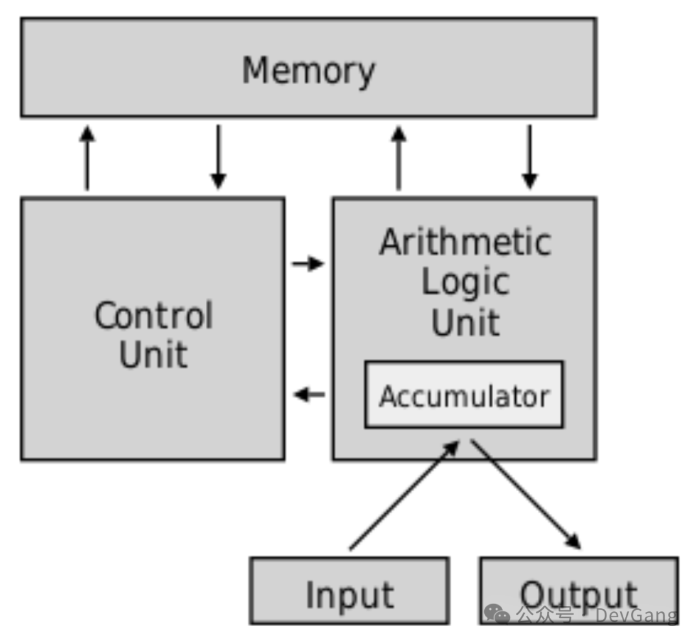

本书作者：测试开发刚哥，文章版权归个人所有，未经授权请勿转载。
0-5 岁就有过目不忘的记忆力，6 个月能认出客人，2 岁能用德语和母亲交流。6 岁已经能读古希腊文献，经常随口报两个 8 位数，心算除法，结果精确到小数点后几位。8 岁就自学完成微积分，阅读 44 卷本的《世界通史》。10 岁进入著名的路德中学，这所学校后来培养出多位诺贝尔奖得主。12 岁开始研究集合论和超限数，讨论无穷理论。15 岁掌握泛函分析、复变函数、测度论。17 岁发表第一篇数学论文《论某类最小多项式的零点位置》。18 岁考入布达佩斯大学数学博士项目。
冯·诺依曼是 20 世纪的“人脉之王”，他与几乎所有改变世界的科学家、政治家、军事家都有过深度交往，包括阿尔伯特·爱因斯坦 (Albert Einstein)、阿兰·图灵 (Alan Turing)、库尔特·哥德尔 (Kurt Gödel)、罗伯特·奥本海默 (Robert Oppenheimer)、理查德·费曼 (Richard Feynman)。
1944 年 8 月，军方联络官找到他说，自己正在参与一个项目，机器每秒能做 5000 次加法运算。第二天，冯·诺依曼就出现在了 ENIAC 项目组门口。计算机的历史从此改变。
ENIAC (Electronic Numerical Integrator and Computer)，是世界上第一台通用电子计算机。冯·诺依曼加入后提出了一个革命性的想法：“为什么不把程序也存到内存里，像数据一样？”
1945 年 6 月，冯·诺依曼整理了一份《First Draft of a Report on the EDVAC》，首次系统描述了现代计算机的架构。80 年过去，从手机到公司服务器，几乎所有计算机仍然是遵循这份架构。这就是冯·诺依曼架构。

1946 年，他启动了 IAS 计算机项目，亲自主持设计和建造，在 1951 年建成第一台冯·诺依曼架构计算机。中国最早的两台计算机（103 机、104 机），也是仿制苏联 BESM 系列,而 BESM 源头就是 IAS。
除了硬件，冯·诺依曼还发明了大量算法，归并排序 (Merge Sort) 、 蒙特卡洛方法 (Monte Carlo Method)、 伪随机数生成器、自修改代码 & 子程序概念，这些都是现代编程语言的基石。
在冯·诺依曼晚年，他还提出了更加超前的问题：“机器能不能自我复制”，对生命科学有重要启示。1958 年写下了未完成的遗作，《计算机与人脑》 (The Computer and the Brain）。预见了后来的神经网络、深度学习。60 年后，当 GPU、TPU、神经网络芯片的兴起，证明他晚年的直觉是对的：串行的冯·诺依曼架构不是唯一答案。
冯·诺依曼定义了计算机应该怎么造，冯·诺依曼架构是唯一“活着”的架构，今天使用的所有设备，本质上还是它。所以冯·诺依曼又被称为，现代计算机之父。